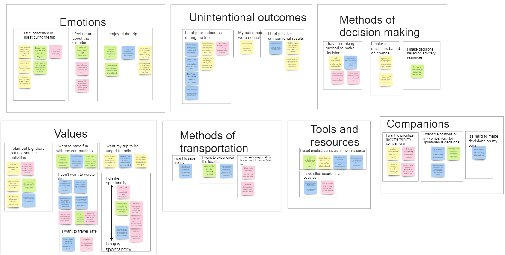
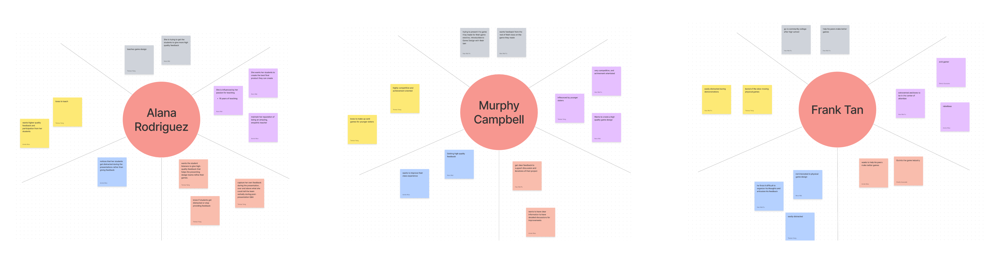
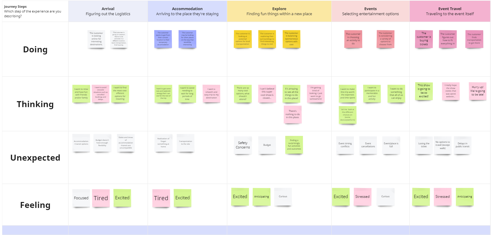

Vagary
Fall 2022
Team Members: Stephen Tao, Jessica Lai, Yifei Chen
Tools: Figma
Problem Space
Trip planning can be a stressful and arduous process, and even with the most experienced in planners,
unforeseen circumstances may still arise. As risk-taking and spontaneity are a natural part of the travel process,
we asked the questions:
- How can we help people reduce the pressure of going through a vast amount of resources when making plans for a trip?
- How can we help people be informed and prepared for unexpected circumstances during travel?
- How can we help add a little more spontaneity in people’s trips?
Research
We started off our research project by conducting a reverse assumptions session to reframe the problem and ideate potential areas for improvement in the travel planning space. We reflected on common considerations during travel planning such as transportation, social, financial, technical, and legal aspects. This is when we started to recognize the assumption and myth that “people always plan trips”, and began focusing on the question How might we support spontaneity by providing more assistance for pressured and last minute travel planning? .

Using directed storytelling as our contextual method, we interviewed four undergraduate students who have previously travelled and had to or wanted to make
spontaneous decisions, and asked them to walk through their decision making process on a previous trip they had. Here are some quotes that stood out to us:
"Spontaneity is less stressful because planning can be too much, planning is just to not waste time and the unexpected is inevitable"
"I think a general structure and outline of a travel plan is still needed but could leave out space and time for free exploration."
Following these interview sessions, we built several models to analyze and synthesize our findings, which included an affinity diagram, an empathy map, and a customer journey map.   
Insights
- Small-scale spontaneity with a loose-structured plan is preferred by participants.
- The main hesitancy against spontaneous travel is the perception of induced risks in safety, time, and budget.
- The main drive for spontaneous travel is internal: freedom, relaxation, excitement and the unexpected reward afterwards.
- Users decide to make a spontaneous decision by weighting the different factors involved to create a rough idea of the benefits potential risks.
Solution
From our insights, we designed a lo-fi prototype, focusing creating an application that catered to the desire for flexibility for spontaneity and adaptation to
unexpected circumstances.
Try it Out!
Track your trip information and be prepared for the unexpected.
An algorithm that can generate suggestions based on your current emotions and interests.
A flexible framework and modular schedule to organize your trip.
Collaborate with your friends to plan your newest adventure.